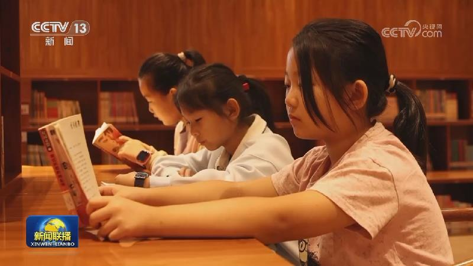
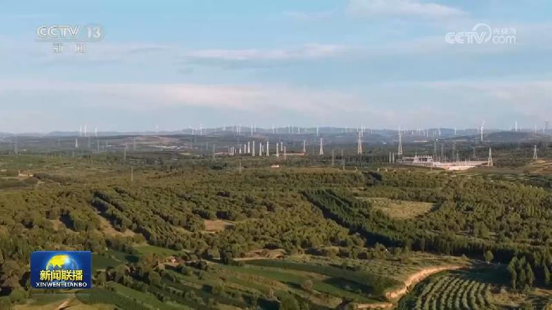
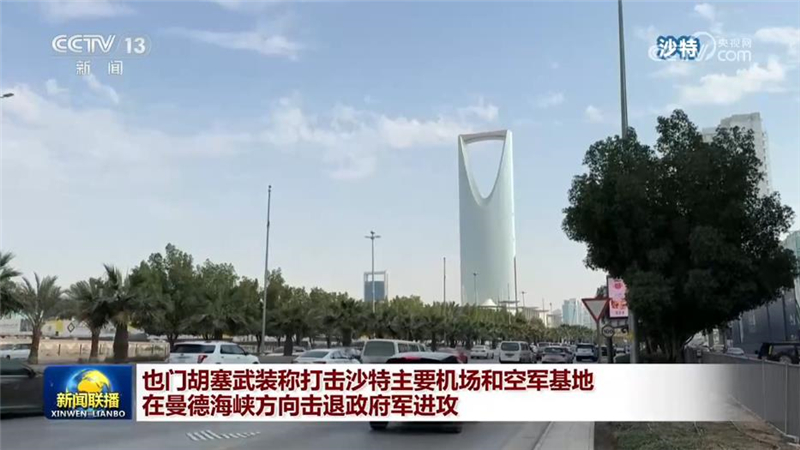
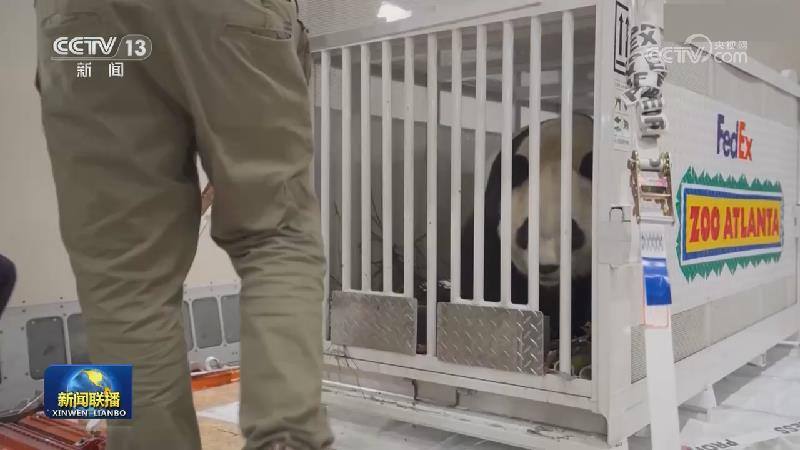
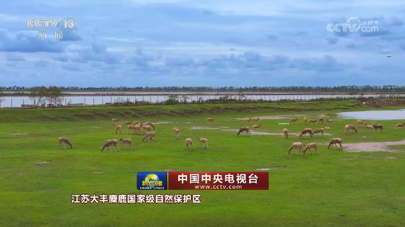

01
【新思想引领新征程】以习近平文化思想为指引 铸就中华文化新辉煌
党的十八大以来，以习近平同志为核心的党中央坚持把文化建设摆在治国理政突出位置，作出一系列重大部署，创造性提出一系列新思想新观点新论断，形成了习近平文化思想，为文化繁荣、文化强国建设提供了强大思想武器和科学行动指南，引领推动中华文脉绵延赓续、中华优秀传统文化创造性转化和创新性发展，在以中国式现代化全面推进强国建设、民族复兴伟业的新征程上凝聚起强大精神力量。

党的十八大以来，以习近平同志为核心的党中央坚持把文化建设摆在治国理政突出位置，作出一系列重大部署，创造性提出一系列新思想新观点新论断，形成了习近平文化思想，为文化繁荣、文化强国建设提供了强大思想武器和科学行动指南，引领推动中华文脉绵延赓续、中华优秀传统文化创造性转化和创新性发展，在以中国式现代化全面推进强国建设、民族复兴伟业的新征程上凝聚起强大精神力量。
我国秋粮收获加紧推进。农业农村部最新农情调度显示，全国秋粮收获已过四成。各地抢抓农时，多措并举，保障粮食颗粒归仓。
这个国庆假期，各地公园举办丰富多彩的文化活动，超过2.1亿人次在公园乐享假日时光。
记者从交通运输部了解到，今年国庆假期，全社会跨区域人员流动量超21亿人次。随着综合交通运输体系持续完善，旺盛的出行需求得到有力支撑，我国发展活力持续释放。
今年以来，入境游持续升温，沉浸式体验内容更丰富，外国游客更深入地感受中国的历史之美、山河之美、文化之美。

这个国庆假期，有人选择出门旅游赏美景，也有不少人选择静下来，用阅读的方式给自己充电，在书香中享受假日慢生活。
我国已建成世界上规模最大的综合交通基础设施体系，为什么还要打造一张物流网？今天（10月7日）的《一线调研》，我们在四川彭州的一个农产品市场寻找答案。

《老年人照料设施建筑设计标准》局部修订版发布
立陶宛议会6日就旨在解禁在本国部署核武器的宪法修正案举行首轮表决，支持废除宪法中的相关禁令。相关法案还需要经过第二次表决。立陶宛议会此前称，废除相关禁令的目的是解除立陶宛全面参与北约集体防御和威慑体系的限制。

也门胡塞武装今天（10月7日）称，该组织使用导弹和无人机对沙特阿拉伯两个国际机场以及海米斯穆谢特的空军基地发动打击。胡塞武装还称，击退了也门政府军在曼德海峡方向的多次攻势。沙特主导的多国联军方面今天称，在沙特首都利雅得北部拦截了胡塞武装发射的一枚导弹。

多艘商船在黑海遭袭 一艘沉没

山河广袤，万物共生；层林尽染，禽鸟翩跹。节目的最后，让我们走进绿水青山，一同感受锦绣神州的生态之美。